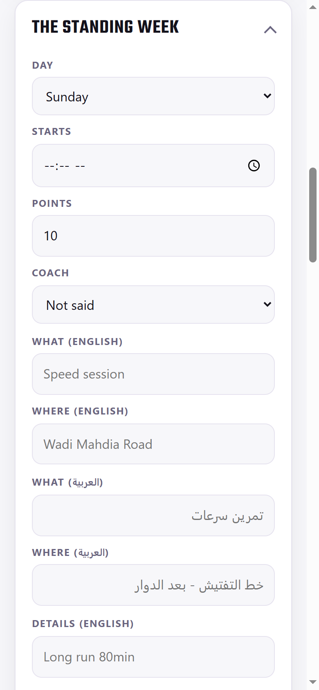
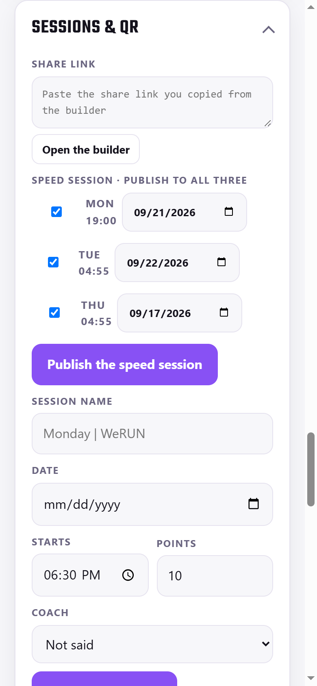
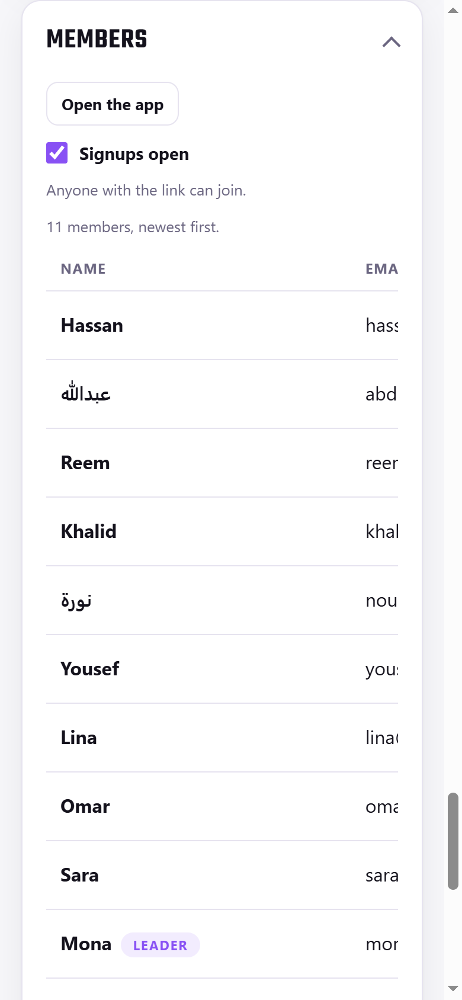
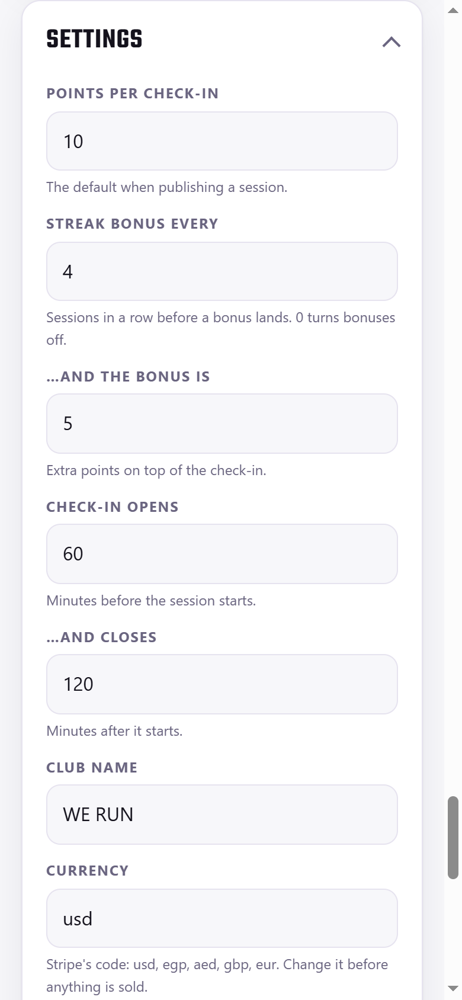

1 · Getting in
- Open weruncoaching.pages.dev/admin and sign in with your own account. It must carry Admin in Members; a coach without it is refused.
- The club password opens it too: keep it for a lost account. Lock at the bottom signs you out.
- Every card starts folded: tap its title to open it.
2 · Sessions
- The standing week: the ten weekly sessions. Edit or Add it: day, time, points, coach, What and Where in both languages, the Details line, the map link.
- Just this week changes one date only: Move it (new time or place) or Call it off, with a word to the club. Put it back undoes it.
- Sessions & QR: Open the builder, make the workout, paste its share link, set date, time, points and coach, then Publish to the club. Publish the speed session sends one link to all three speed days.
- Who came on a session: the ✕ voids a check-in and takes its points back; Ask for feedback asks that athlete after their next check-in.
3 · People
- Members: Make coach, Make leader, Make admin, Block, and Reset link: a one-time link (24 hours) copied for you to send on WhatsApp. The app sends no email.
- Coaches: coaches and leaders, most sessions attended first. Add one from Add a coach or leader.
- Nobody can take their own admin away: ask another admin.
4 · The club
- Club news: both languages, an optional photo, Pin to the top, then Post it now or Post at a set time.
- Coach Tips (Open the editor) · Who Are We page (the /about page; nothing changes until Save) · What athletes said (ratings).
- Settings: points, streak bonus, the check-in window (opens 60, closes 120 minutes), group chat link, announcement line, then Save. Switches: Signups open, Maintenance mode, Require location for the code.
- Take it with you: Members, Points ledger and Check-ins as .csv. Names and emails are inside: keep them private.
Everything here is live the moment you save. There is no test copy.

The standing week

Sessions & QR

Members

Settings
١ · الدخول
- افتح weruncoaching.pages.dev/admin وسجّل الدخول بحسابك. يجب أن يحمل Admin في Members؛ المدرب بدونها لا يدخل.
- كلمة مرور النادي تفتحها أيضًا: احتفظ بها لحساب ضائع. زر Lock في الأسفل يسجّل خروجك.
- الصفحة بالإنجليزية، وكل بطاقة تبدأ مطويّة: اضغط عنوانها لفتحها.
٢ · الحصص
- The standing week: حصص الأسبوع العشر. Edit أو Add it: اليوم والوقت والنقاط والمدرب، وما وأين باللغتين، وسطر التفاصيل، ورابط الخريطة.
- Just this week يغيّر تاريخًا واحدًا فقط: Move it (وقت أو مكان جديد) أو Call it off مع كلمة للنادي. Put it back يلغي التغيير.
- Sessions & QR: Open the builder، اصنع التمرين والصق رابط المشاركة، وحدّد التاريخ والوقت والنقاط والمدرب، ثم Publish to the club. زر Publish the speed session ينشر رابطًا واحدًا لأيام السرعات الثلاثة.
- Who came على الحصة: علامة ✕ تلغي تسجيل حضور وتسحب نقاطه؛ Ask for feedback يطلب رأي العدّاء بعد تسجيله القادم.
٣ · الأعضاء
- Members: Make coach وMake leader وMake admin وBlock، وReset link: رابط لمرة واحدة (٢٤ ساعة) يُنسخ لك لترسله على واتساب. التطبيق لا يرسل بريدًا.
- Coaches: المدربون والقادة، الأكثر حضورًا أولًا. أضف من Add a coach or leader.
- لا أحد يزيل صلاحية المشرف عن نفسه: اطلب من مشرف آخر.
٤ · النادي
- Club news: باللغتين، مع صورة اختيارية، وPin to the top، ثم Post it now أو Post at لوقت محدد.
- Coach Tips (Open the editor) · Who Are We page (صفحة /about، لا يتغيّر شيء قبل Save) · What athletes said (التقييمات).
- Settings: النقاط ومكافأة الستريك ونافذة التسجيل (يفتح ٦٠ ويُغلق ١٢٠ دقيقة) ورابط القروب وسطر الإعلان، ثم Save. المفاتيح: Signups open وMaintenance mode وRequire location for the code.
- Take it with you: الأعضاء وسجل النقاط وتسجيلات الحضور بصيغة .csv. فيها أسماء وبريد: احفظها بخصوصية.
كل ما تحفظه هنا يظهر للجميع فورًا. لا توجد نسخة تجريبية.
الأسبوع الثابت
الحصص والرمز
الأعضاء
الإعدادات